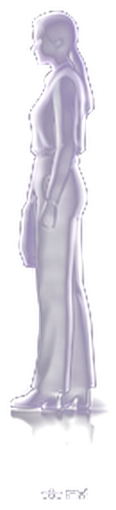
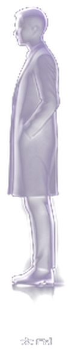
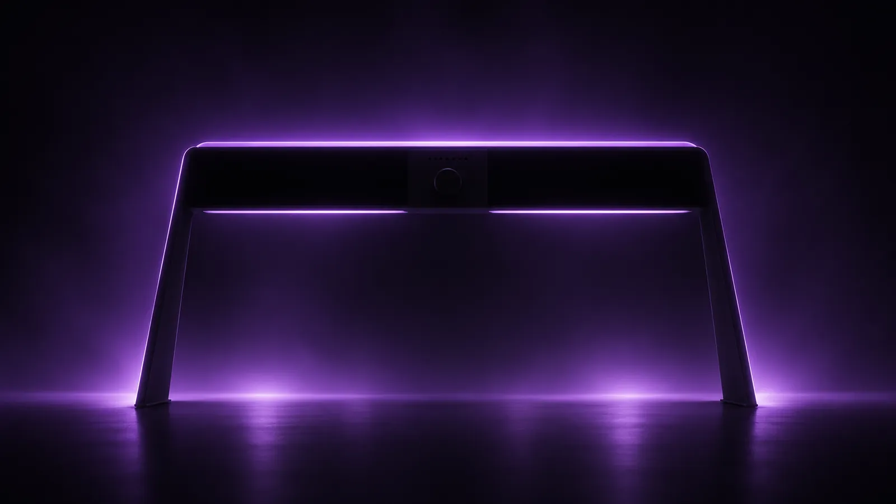

LANGUAGE
BARRIER
같은 말을 하지 않는다.
단어가 달라서, 뜻이 건너가지 못한다.

BRIDGE
SMART COMMUNICATION GATE
2030 · MYEONGDONG
두 사람, 두 개의 언어,
하나의 포장마차.
ENTER
THE GATE.
SMART COMMUNICATION GATE
TECHNOLOGY CONNECTS.
PEOPLE DECIDE.
SCROLL
SCENE 01 명동의 포장마차, 마주 선 두 사람


PROBLEM DEFINITION
같은 말을 하지 않는다.
단어가 달라서, 뜻이 건너가지 못한다.
같은 상황을 읽지 않는다.
맵기, 수량, 옵션 — 맥락이 어긋난다.
대화가 끊어진다.
서로를 보지 못한 채, 주문은 멈춘다.

INSIGHT
번역보다 먼저, 두 사람이 서로를 마주 보는 일.
기술은 그 사이를 이어줄 뿐 — 결정은 사람이 합니다.
360° VIEWER
ACT 04 — PUI SIMULATOR
ORDER READY — 음식이 게이트를 지나 건네집니다
ACT 05 — BE THE TOURIST
01DISCOVERY
SCROLL ↓
STEP BACK
THROUGH.
TECHNOLOGY
CONNECTS.
PEOPLE
DECIDE.